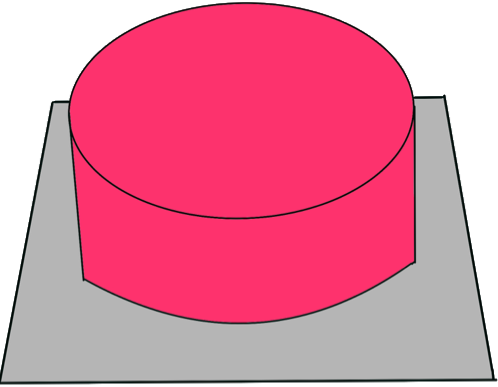
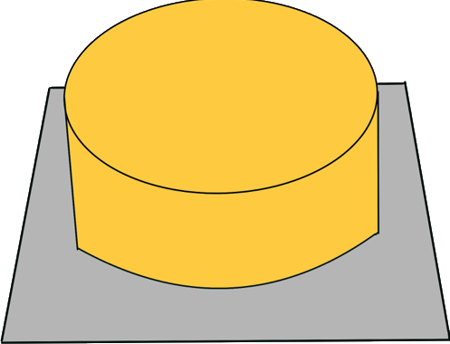

Experiments in the Lab
Here's how the magic happened! In the Institute of Biotechnology and the FZ Jülich
During the lockdown in 2020, we researched and planned our experiments bit by bit. Entering the laboratory in June, we were able to present well-developed and -organized plans for the upcoming weeks. It enabled us to carry out most of our planned experiments, despite the restriction to only one permitted person at a time.
Due to the possibility of working at two different locations, namely the Institute of Biotechnology and FZ Jülich, we could gain a lot of experiences and results, both for each of us personally, as well as specifically as part of our project. As the result of the fruitful work in the lab we collected quite a Library of Protocols of all experiments we conducted in the scope of the project M.A.R.S. On this page you have access to all our lab protocols.
Due to the possibility of working at two different locations, namely the Institute of Biotechnology and FZ Jülich, we could gain a lot of experiences and results, both for each of us personally, as well as specifically as part of our project. As the result of the fruitful work in the lab we collected quite a Library of Protocols of all experiments we conducted in the scope of the project M.A.R.S. On this page you have access to all our lab protocols.

Institute of Biotechnology
Our experiments in the laboratory of Prof. Dr. Schwaneberg can be divided into four different categories. The binding tests of our anchor peptides on various surfaces to construct and express an optimal binding complex, the liposome formation and the protein expression and lastly the protein integration of our needed proteins.
Concerning the binding tests, we want use different antimicrobial peptides and test their binding abilities on our polystyrene coated magnetic particles to determine the best one. We would then use this one as the magnet-binding domain in our binding complex. To evaluate the binding abilities of the different binding domains, we first express different anchor peptides with an eGFP label. We then check the remaining fluorescence under a confocal microscope after several washing steps. To determine the polymersome or liposome binding domain we proceed analogously. After finding the best binding peptides, we can express a biadhesive binding complex using both domains and a stiff linker domain to connect our ATP factories to our magnetic particles.
We have searched for purification methods for bacteriorhodopsin from Halobacterium salinarium and ATP synthase from Saccharomyces cerevisiae. For the ATP synthase we want to design a plasmid with the sequence of the first 60 amino acids of an ATP synthase inhibitor protein. With this protein an affinity purification of the ATP synthase from the isolated mitochondria can be performed.
For the lipid formation we decided to use the film rehydration technique to rehydrate a dried lipid film and create small unilamellar vesicles. To make the liposomes easier to detect under the microscope we want to form giant unilamellar vesicles. This was achieved by creating an oil-surfactant mix where an aqueous solution, which contains the lipid batch, is added [1]. The spontaneous formation of surfactant-stabilized water-in-oil droplets with a spherical supported lipid bilayer at their periphery is then induced by manual shaking and the average diameter is determined by the shaking duration and intensity. A small amount of ATTO-labelled lipids where included in the lipid batch to confirm the liposome formation using fluorescence microscopy.
To finally integrate our chosen proteins, we want to start with integration of bacteriorhodopsin into the giant unilamellar vesicles. Therefore, we first solubilize the purple membrane. In order to integrate the membrane proteins, it is necessary to destabilize the liposome membrane using the detergence Triton-X 100. We plan to add Triton-X-100 together with our bacteriorhodopsin to the solution and to incubate the mixture to perform the integration. For detergence removal we plan to perform multiple washing steps using bio beads. For a confirmation of the correct integration we intended to use pyranine which is a pH indicating fluorescent dye. Through the acidification of the inner phase of the vesicles by bacteriorhodopsin the pyranine inside the vesicles would appear darker than their background. Thus, we would be able to visibly proof the correct integration using fluorescent microscopy. The destabilisation method could also work to integrate the ATP synthase and therefore create our final chassis. To proof the successful integration of bacteriorhodopsin and the ATP synthase together we would test our system in the context of a real industrial application at the FZ Jülich and model it to generate theoretical data.
Concerning the binding tests, we want use different antimicrobial peptides and test their binding abilities on our polystyrene coated magnetic particles to determine the best one. We would then use this one as the magnet-binding domain in our binding complex. To evaluate the binding abilities of the different binding domains, we first express different anchor peptides with an eGFP label. We then check the remaining fluorescence under a confocal microscope after several washing steps. To determine the polymersome or liposome binding domain we proceed analogously. After finding the best binding peptides, we can express a biadhesive binding complex using both domains and a stiff linker domain to connect our ATP factories to our magnetic particles.
We have searched for purification methods for bacteriorhodopsin from Halobacterium salinarium and ATP synthase from Saccharomyces cerevisiae. For the ATP synthase we want to design a plasmid with the sequence of the first 60 amino acids of an ATP synthase inhibitor protein. With this protein an affinity purification of the ATP synthase from the isolated mitochondria can be performed.
For the lipid formation we decided to use the film rehydration technique to rehydrate a dried lipid film and create small unilamellar vesicles. To make the liposomes easier to detect under the microscope we want to form giant unilamellar vesicles. This was achieved by creating an oil-surfactant mix where an aqueous solution, which contains the lipid batch, is added [1]. The spontaneous formation of surfactant-stabilized water-in-oil droplets with a spherical supported lipid bilayer at their periphery is then induced by manual shaking and the average diameter is determined by the shaking duration and intensity. A small amount of ATTO-labelled lipids where included in the lipid batch to confirm the liposome formation using fluorescence microscopy.
To finally integrate our chosen proteins, we want to start with integration of bacteriorhodopsin into the giant unilamellar vesicles. Therefore, we first solubilize the purple membrane. In order to integrate the membrane proteins, it is necessary to destabilize the liposome membrane using the detergence Triton-X 100. We plan to add Triton-X-100 together with our bacteriorhodopsin to the solution and to incubate the mixture to perform the integration. For detergence removal we plan to perform multiple washing steps using bio beads. For a confirmation of the correct integration we intended to use pyranine which is a pH indicating fluorescent dye. Through the acidification of the inner phase of the vesicles by bacteriorhodopsin the pyranine inside the vesicles would appear darker than their background. Thus, we would be able to visibly proof the correct integration using fluorescent microscopy. The destabilisation method could also work to integrate the ATP synthase and therefore create our final chassis. To proof the successful integration of bacteriorhodopsin and the ATP synthase together we would test our system in the context of a real industrial application at the FZ Jülich and model it to generate theoretical data.
FZ Jülich
At the FZ Jülich we perform multiple tests on a carboxylate reductase from the organism Nocardia otitidiscaviarum. This enzyme is capable of converting 3-hydroxybenzoic acid to 3-hydroxybenzaldehyde. Therefore, we prepare triplets of reaction vials where we add the carboxylate reductase, 3-hydroxybenzoic acid as the substrate, ATP, NADH, polyphosphate, the needed enzyme to perform the conventional ATP regeneration and a 4x concentrated MOPS buffer containing glucose and MgCl2. With this method kinases are used to fuse phosphate groups from polyphosphates to ADP. This performs the ATP regeneration[2]. After getting comfortable with the procedures, we want to show using negative controls without ATP, that the lack of ATP leads to no substrate conversion at all, which means that ATP is crucial for that enzyme. Another negative control without the enzymes which normally performs the ATP regeneration will be put to test, to show the importance of a cofactor regeneration system.
To get more insight into the functionality of that enzyme, we also want to monitor the product conversion of a whole cell approach where the carboxylate reductase is expressed in E. coli K12 cells which tolerate the aldehyde product. Using these different attempts, we can collect valuable data which helps us to compare our system to the ATP regeneration approaches above. Therefore, our last testing study is supposed to focus on using our ATP-factories as the needed cofactor regeneration system. Furthermore, we simulated how M.A.R.S. would act in this reaction setup to additionally generate data from a bioinformatic point of view. This can be seen on our modeling page. A successful integration of the bacteriorhodopsin and ATP synthase would result in a detectable amount of product conversion.
To get more insight into the functionality of that enzyme, we also want to monitor the product conversion of a whole cell approach where the carboxylate reductase is expressed in E. coli K12 cells which tolerate the aldehyde product. Using these different attempts, we can collect valuable data which helps us to compare our system to the ATP regeneration approaches above. Therefore, our last testing study is supposed to focus on using our ATP-factories as the needed cofactor regeneration system. Furthermore, we simulated how M.A.R.S. would act in this reaction setup to additionally generate data from a bioinformatic point of view. This can be seen on our modeling page. A successful integration of the bacteriorhodopsin and ATP synthase would result in a detectable amount of product conversion.
Push the buttons to view the protocols from each category
Buffer
and
Media
and
Media
Proteins
and
Integration
and
Integration
Liposomes
and
Binding
and
Binding
Proof
of
Concept
of
Concept

